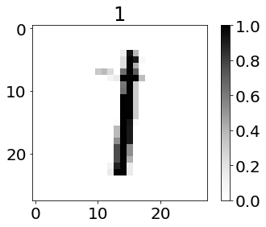
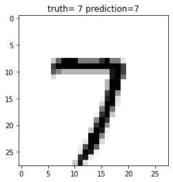
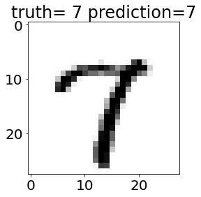

%reset
import numpy as np
import sklearn
import gzip
from matplotlib import pyplot as plt
plt.rcParams.update({'font.size': 20})
# These are some parameters to make figures nice (and big)
%matplotlib inline
%config InlineBackend.figure_format = 'retina'
plt.rcParams['figure.figsize'] = 16,8
params = {'legend.fontsize': 'x-large',
'figure.figsize': (15, 5),
'axes.labelsize': 'x-large',
'axes.titlesize':'x-large',
'xtick.labelsize':'x-large',
'ytick.labelsize':'x-large',
'font.size':'x-large'}
plt.rcParams.update(params)
---------------------------------------------------------------------------
ValueError Traceback (most recent call last)
/var/folders/pr/3_264g5j1d15jdsjfgsqbdj80000gp/T/ipykernel_55368/2632028987.py in <module>
16 'font.size':'x-large'}
17
---> 18 plt.rcParams.update(params)
~/miniconda3/lib/python3.9/_collections_abc.py in update(self, other, **kwds)
938 if isinstance(other, Mapping):
939 for key in other:
--> 940 self[key] = other[key]
941 elif hasattr(other, "keys"):
942 for key in other.keys():
~/miniconda3/lib/python3.9/site-packages/matplotlib/__init__.py in __setitem__(self, key, val)
595 cval = self.validate[key](val)
596 except ValueError as ve:
--> 597 raise ValueError(f"Key {key}: {ve}") from None
598 dict.__setitem__(self, key, cval)
599 except KeyError as err:
ValueError: Key font.size: Could not convert 'x-large' to float
Reading Data¶
classes = np.array(['0','1', '2', '3', '4', '5','6','7','8','9'])
def plot_confusion_matrix(y_true, y_pred, classes,
normalize=False,
title=None,
cmap=plt.cm.Blues):
"""
This function prints and plots the confusion matrix.
Normalization can be applied by setting `normalize=True`.
"""
if not title:
if normalize:
title = 'Normalized confusion matrix'
else:
title = 'Confusion matrix, without normalization'
# Compute confusion matrix
cm = confusion_matrix(y_true, y_pred)
# Only use the labels that appear in the data
#classes = classes[unique_labels(y_true, y_pred)]
if normalize:
cm = cm.astype('float') / cm.sum(axis=1)[:, np.newaxis]
print("Normalized confusion matrix")
else:
print('Confusion matrix, without normalization')
#print(cm)
fig, ax = plt.subplots(figsize=[20,12])
im = ax.imshow(cm, interpolation='nearest', cmap=cmap)
ax.figure.colorbar(im, ax=ax)
# We want to show all ticks...
ax.set(xticks=np.arange(cm.shape[1]),
yticks=np.arange(cm.shape[0]),
# ... and label them with the respective list entries
xticklabels=classes, yticklabels=classes,
title=title,
ylabel='True label',
xlabel='Predicted label')
# Rotate the tick labels and set their alignment.
plt.setp(ax.get_xticklabels(), rotation=45, ha="right",
rotation_mode="anchor")
# Loop over data dimensions and create text annotations.
fmt = '.2f' if normalize else 'd'
thresh = cm.max() / 2.
for i in range(cm.shape[0]):
for j in range(cm.shape[1]):
ax.text(j, i, format(cm[i, j], fmt),
ha="center", va="center",
color="white" if cm[i, j] > thresh else "black")
fig.tight_layout()
#plt.xlim(-0.5, len(np.unique(y))-0.5)
#plt.ylim(len(np.unique(y))-0.5, -0.5)
return ax
# Training data
import gzip
f = gzip.open('train-images-idx3-ubyte.gz','r')
image_size = 28
n_images_train = 50000
import numpy as np
f.read(16)
buf = f.read(image_size * image_size * n_images_train)
data_train = np.frombuffer(buf, dtype=np.uint8).astype(np.float32)
data_train = data_train.reshape(n_images_train, image_size, image_size)
data_train=data_train/255
f = gzip.open('train-labels-idx1-ubyte.gz','r')
f.read(8)
labels_train=np.zeros(n_images_train)
for i in range(0,n_images_train):
buf = f.read(1)
labels_train[i]=np.frombuffer(buf, dtype=np.uint8).astype(np.int64)[0]
labels_train=labels_train.astype(int)
# Test data
import gzip
f = gzip.open('t10k-images-idx3-ubyte.gz','r')
image_size = 28
n_images_test = 10000
import numpy as np
f.read(16)
buf = f.read(image_size * image_size * n_images_test)
data_test = np.frombuffer(buf, dtype=np.uint8).astype(np.float32)
data_test = data_test.reshape(n_images_test, image_size, image_size)
data_test = data_test/255
f = gzip.open('t10k-labels-idx1-ubyte.gz','r')
f.read(8)
labels_test=np.zeros(n_images_test)
for i in range(0,n_images_test):
buf = f.read(1)
labels_test[i]=np.frombuffer(buf, dtype=np.uint8).astype(np.int64)[0]
labels_test=labels_test.astype(int)
np.shape(data_train)
(50000, 28, 28)
Plot¶
ind=np.random.randint(0,n_images_train)
plt.imshow(data_train[ind],cmap=plt.get_cmap('Greys'));
plt.title(labels_train[ind]);
plt.colorbar();

X_train=data_train.squeeze().reshape(n_images_train,28*28)
y_train=labels_train
print(X_train.shape)
print(y_train.shape)
(50000, 784)
(50000,)
X_test=data_test.squeeze().reshape(n_images_test,28*28)
y_test=labels_test
print(X_test.shape)
print(y_test.shape)
(10000, 784)
(10000,)
Logistic Regression¶
from sklearn import linear_model
model=linear_model.LogisticRegression(max_iter=5000)
logreg=model.fit(X_train,y_train)
y_hat=logreg.predict(X_test)
score=sklearn.metrics.accuracy_score(y_hat,y_test)
print((1-score)*100)
7.469999999999999
from sklearn.metrics import confusion_matrix
cm = confusion_matrix(y_true = y_test, y_pred = y_hat)
plot_confusion_matrix(y_test, y_hat, classes,
normalize=False,
title=None,
cmap=plt.cm.Blues)
Confusion matrix, without normalization
<AxesSubplot:title={'center':'Confusion matrix, without normalization'}, xlabel='Predicted label', ylabel='True label'>
ind=np.random.randint(0,n_images_test)
plt.imshow(data_test[ind],cmap=plt.get_cmap('Greys'));
plt.title('truth= '+str(y_test[ind])+' prediction='+str(y_hat[ind]));

Neural Net¶
from sklearn import neural_network
model=neural_network.MLPClassifier(hidden_layer_sizes=[256,128],max_iter=1000,alpha=0.001)
mnist=model.fit(X_train,y_train)
y_hat=mnist.predict(X_test)
score=sklearn.metrics.accuracy_score(mnist.predict(X_test),y_test)
print((1-score)*100)
2.849999999999997
ind=np.random.randint(0,n_images_test)
plt.imshow(data_test[ind],cmap=plt.get_cmap('Greys'));
plt.title('truth= '+str(y_test[ind])+' prediction='+str(y_hat[ind]));

from sklearn.metrics import confusion_matrix
cm = confusion_matrix(y_true = y_test, y_pred = y_hat)
plot_confusion_matrix(y_test, y_hat, classes,
normalize=False,
title=None,
cmap=plt.cm.Blues)
Confusion matrix, without normalization
<AxesSubplot:title={'center':'Confusion matrix, without normalization'}, xlabel='Predicted label', ylabel='True label'>